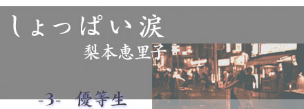
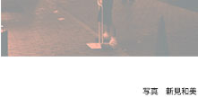

|  | |
| 「トイレに行け」 机の上のそのメモを見た瞬間、私は教室を飛び出した。慌ててトイレへ向かう。 |
 |
|
３つ並んだドアのうち、一番奥のドアから水が流れる音がした。中をのぞきこむと、バラバラに切り裂かれた体操着が便器の中でおぼれていた。私はしゃがみこんで、便器の中に手をつっこんで、それらを拾う。「梨本」と書かれたゼッケンにマジックで大きく×が記されていた。 濡れたバラバラの体操着を抱えて私が教室へ戻ると、それまでの教室のざわめきがピタリと止んだ。静まり返ったなか、私は必死に一番前の席を目指して進む。 「便所菌がきました。みなさん感染しないように気をつけてくださーい」 一人の男子の声が響き、みんなが笑う。誰もが机ごと大げさに私から遠ざかっていく。 泣くな、泣くな。私は自分に言い聞かせた。ここで泣いたら負け。絶対に泣かない。必死にそう思っても、自分の机に着いた時には涙で視界がゆがんで見えて、私は机につっぷした。誰かが私の髪を引っ張る。机を蹴る。でも私にはこうしてうつむいていることしか、できなかった。 クラスのほとんど全員から無視されるようになってから、私は昼休みが大キライになった。昼休みには「外で遊びましょう」という放送が流れ、クラス一丸となって校庭で遊ぶ。でも私は行けるわけがない。いつも図書室に行って、本を読んだりしていた。 図書室の窓からは校庭が見える。そこから私はつい最近まで一緒に遊んでいた、ユリちゃんやナッちゃんがバレーボールしているのを眺めていた。なんでこんなことになっちゃったんだろう。私のどこがいけなかったんだろう。 「委員長じゃん」 ささやき声にふりむくと、マリちゃんが辞書片手に立っていた。どう応対していいか分からない私に、彼女はなんのためらいもなく近寄ってきた。「何してんの？」そう言って、私が見ていた校庭を一緒にのぞきこむ。 「つまんないよね、学校」 マリちゃんが小さくつぶやく。その言葉はスッと私の心に入ってきて、じんわり温かくなるのがわかった。私は少しうなづく。 髪を染めて、学校を休みがちなマリちゃんは、いつも先生に怒られてばかりいる。そんな彼女を、私は今まで見下してきたところがあった。でも、もしかしたら彼女は、私よりずっと先を歩いているのかもしれない。ファンデーションがいい感じに馴染んだマリちゃんの横顔を見て、そう思った。 「そうだ、今日さ、一緒に遊びに行かない？」 満面の笑みでこちらを向いたマリちゃんに、私はなんのためらいもなくうなづく。 「行く」 「委員長の家ってさ、確か戸田橋の近くだよね？ じゃ、夜の11時に橋のところで。寒い からしっかり着込んできた方がいいよ」 じゃね、と言って、マリちゃんは去っていった。どこへ行って、どんな遊びをするんだろう。疑問に思ったけど、不安は全くなくてワクワクした。最近こんなドキドキを忘れていた気がする。 夜の11時。私は自分の部屋の窓からこっそり抜けだして、橋まで行った。橋の近くに２台のバイクが止まっている。２台とも男の人が乗っていて、その後ろにマリちゃんが乗っていた。長い髪を束ねずになびかせて、黒のジャンパーを着たマリちゃんは、とても私と同じ15歳に見えない。 「委員長ー、こっち、こっち」 マリちゃんはニコニコしながら手招きする。 「こんばんは」 随分この場に似合わない挨拶だと思いながら、私は２人の前でおじぎをする。 「こっちがカズ君、こちらがリュウさんね。委員長はリュウさんの後ろに乗って」 リュウさんと呼ばれた人が、私にメットを差し出す。 「委員長って呼ばれてるの？」 笑いを含んだ声でリュウさんが言う。 「学級委員長やってるから」 ドキドキを隠して私はリュウさんの後ろに乗り、背中につかまる。「へー、すごいね」リュウさんのその言葉が合図となって、２台のバイクは走り出す。時々後ろを振り返ると、カズ君とマリちゃんたちは、バイクの音に負けない大声で何か話して、笑い合っているのがわかった。 リュウさんは何も話さず、私も話さなかった。数十分走ると、潮の香りがして海に出た。冬の海の香りは鼻につう〜んとくる。新鮮な香りに身体がくすぐられるのを感じた。途中で少しずつ他のバイクが合流して、真っ暗な海のそばを、20台ぐらいのバイクがライトを照らしながら走った。後ろを振り返るとまぶしいほどの光。 １時間ほど走った時、また少しずつ他のバイクが離れていき、気付くと自分が乗っている１台だけになり、あっという間に迎えに来てもらった戸田橋に着いた。リュウさんは私をおろすと、自分もメットをとった。 「楽しかった？」 私がうなづくと、リュウさんは満足そうな顔で笑う。 「良かった。マリちゃんから同じクラスで、学校がつまんない子がいるって聞いたからさ」 聞いたから…何？ 私は少しだけ身構える。 「大丈夫です。今日気晴らしになったし、また明日から頑張ります」 リュウさんが私からメットを受け取る。 「別に頑張らなくてもいいんじゃない？ 『イチ抜けた』したい時は、一度抜けてみると いいと思うけどね。委員長ならなおさら」 そうかな…。私はどうしてだか、突如わきあがってきた涙目を見られないように、慌ててリュウさんにおじぎをした。 翌日、学校へ行くと、私の上履きに裏から画びょうがいっぱい刺さっていた。私は丁寧にそれを抜き取り、これをやっただろうと思われる人の下駄箱から上履きを取り出し、丁寧に刺し返す。同じクラスの女子が、私のその行為を驚いた顔をして見つめていた。 マリちゃんは学校を休んでいて、私は少しガッカリしながら授業を受けていた。 休み時間、仲の良かったユリちゃんたち女子数人が、私に聞こえるような大声で話していた。「よく人の上履きに画びょうなんて刺せるよねぇ」私は思いきって立ち上がり、彼女の近くまでいく。 「だってしょうがないじゃん。私のに刺さってたんだから」 ユリちゃんはしばらくこちらを呆然と見た後、態勢をたて直す。 「は？ なにイバッてんの。あんたのそういうとこ、ムカツクんだよ」 「そうなら、そうって言えばいいじゃん。こそこそしないでさ」 心臓がつぶれそうになりながら、私はきっぱり言った。ユリちゃんも泣きそうになりながら、でもしっかりと私を正面から見据える。 「直接言えたら誰も苦労しないでしょ。今はそうやって被害者ぶってるけどさ、あんた今まで学級委員長って感じで、何でもできますって感じでイバッててさ、みんながうんざりしてたの知らないでしょ。私たちはあんたの召使じゃない。なんで私たちがイチイチあんたの言うこと聞かないといけないわけ？」 クラス中が静まり返っている。私は何も言えなかった。チャイムが鳴ってみんなが席に着きはじめた時、ユリちゃんにだけ聞こえるような声で私は言う。 「ごめんね」 ユリちゃんは黙って自分の席に着いた。 それから数日、私はいじめられてはいないけど、誰にも相手にされなかった。まるでここにいない人のように扱われる。それははっきりとイジめられていた時より辛かった。どうしたらこの状況が変わるんだろう。無言の重圧に耐えきれなくて、全てをほおり投げたくなった。 ２月14日。期末テストの初日。テスト開始になって５分後、私は名前だけ書くと答案を裏返して前にいる先生のもとへ持って行った。 「どうしたんだ？」 先生は驚いた顔で私を見つめる。 「帰ります」 「なんだ、体調悪いのか？」 「いえ、そういうわけじゃないんですけど……」 周りを見渡すと、クラス中の人が顔をあげなくても、私の話を聞いているのが分かった。 「なんか、もう面倒くさくて。０点でいいです」 先生の顔色が変わった。 「おまえ、ふざけてるのか？ 早く席に戻れっ」 「全然ふざけてないです。失礼します」 「おい、梨本っ」先生の大声が響いた。私はかばんを取り、教室を出ようとする。ドアの 近くでユリちゃんと目が合う。その目が笑いをこらえているように見えた。 ガラリ。 教室を出て、下駄箱まで走る。誰も追ってはこないけど、大騒ぎになってるんだろうな。家に連絡がいって、きっと今夜は叱られる。でもいいんだ。今日だけは、イチ抜けたい 。 校門を出ようとしたら、マリちゃんが登校してきたところだった。 「委員長、どうしたの？」 今日はテストの日だからか、化粧をしていない。初めて見たマリちゃんの素顔。 「帰るの。つまらないから」 私が真面目な顔で言うと、マリちゃんが吹き出す。 「私でさえ、ちゃんとテスト受けるのに……。だめだなぁ」 マリちゃんは笑いながらメモ帳を取り出し、何かをメモした。 「はい、これ。リュウさんの電話番号。電話してみなよ。バレンタインだし」 私が受け取ろうか迷っていると、マリちゃんが重ねて言う。 「リュウさん、かっこ良かったでしょ？ うちのアタマなんだから」 「アタマ？」 怪訝な顔で私が聞き返すと、呆れたようにマリちゃんが言う。 「頭……リーダー！ 族のリーダーなの！ 委員長はクラスのリーダーだけどさ、リュウさんは遊びのリーダーなわけ。委員長、勉強させてもらった方がいいよ」 メモを押しつけて、じゃね、と去ろうとするマリちゃんに、私は慌てて聞く。 「でも、なんて電話すればいいんだろ」 マリちゃんは立ち止まり、じれったそうな顔をする。 「そんなこと、自分で考えなよ。バレンタインなんだし、チョコでも渡せば？」 ああ、そうか。今日はバレンタインか。うなづく私にマリちゃんは、「委員長さ〜、頭カタすぎなんだよ」と肩をたたく。 「今日は一番好きなことしなよ。いつもみたいに勉強とか気晴らしとか言ってないでさ」 走って校舎に駆け込んでいくマリちゃんの後ろ姿は、優等生みたいに背筋がぴんと伸びていた。 私はメモを握りしめて校門を出る。目の前に広がった空は、見飽きた夕暮れではなく、今日はまだ青く輝いていた。気晴らしじゃなくて、今日はリュウさんを誘って冬の海を見に行こう。そして潮の香りを身体にしみこませた新しい自分になりたいと思った。 梨本恵里子（なしもと・えりこ） 1978年生まれ。フリーライター |